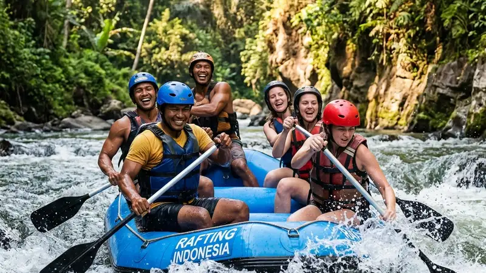

Cara memilih paket rafting perusahaan yang aman dimulai dari memeriksa legalitas operator, kelengkapan perlengkapan keselamatan, dan kesesuaian kapasitas grup dengan jumlah peserta.
- Pastikan operator memiliki instruktur bersertifikat dan izin resmi.
- Sesuaikan jalur dan tingkat kesulitan dengan kondisi fisik mayoritas peserta.
- Periksa kelengkapan perlengkapan keselamatan sebelum menyepakati paket.
- Konfirmasi rasio instruktur per perahu untuk memastikan pengawasan memadai.
- Minta rincian tertulis mengenai fasilitas dan skema harga paket.
Apa Kriteria Utama Memilih Operator Rafting Perusahaan?
Kriteria utama meliputi legalitas usaha, sertifikasi instruktur, rekam jejak keselamatan, dan kejelasan skema harga yang ditawarkan.
Sebelum menghubungi operator, perusahaan sebaiknya mengecek apakah operator memiliki izin usaha wisata resmi dan instruktur yang telah mengikuti pelatihan pemandu arung jeram bersertifikat. Rekam jejak operator, termasuk pengalaman menangani rombongan korporat sebelumnya, juga menjadi indikator penting kredibilitas layanan.
Bagaimana Menentukan Jalur Rafting yang Sesuai untuk Rombongan Perusahaan?
Jalur yang sesuai adalah yang tingkat kesulitannya cocok dengan kondisi fisik mayoritas peserta, mengingat rombongan perusahaan biasanya terdiri dari berbagai usia dan tingkat kebugaran.
Untuk rombongan campuran yang mayoritas belum berpengalaman, jalur dengan jeram tenang hingga sedang umumnya lebih direkomendasikan dibandingkan jalur ekstrem. Operator yang berpengalaman biasanya dapat memberikan rekomendasi jalur berdasarkan komposisi usia dan kondisi fisik peserta yang disampaikan sebelumnya.
Bagaimana Menyesuaikan Kapasitas Perahu dengan Jumlah Peserta?
Kapasitas perahu perlu disesuaikan agar setiap perahu diisi sesuai standar keselamatan, bukan berdasarkan efisiensi biaya semata.
Setiap perahu rafting memiliki batas kapasitas aman yang ditentukan oleh operator berdasarkan ukuran perahu dan kondisi sungai. Rombongan besar sebaiknya dibagi ke dalam beberapa perahu dengan jumlah instruktur pendamping yang memadai, bukan dipaksakan mengisi satu perahu melebihi kapasitas demi menghemat biaya.
Apa yang Perlu Dikonfirmasi Sebelum Menyepakati Paket Rafting Perusahaan?
Hal yang perlu dikonfirmasi meliputi rundown acara, rasio instruktur, kelengkapan alat keselamatan, dan kebijakan jika terjadi perubahan cuaca.
Beberapa poin yang sebaiknya ditanyakan kepada operator sebelum menyepakati paket:
- Berapa jumlah instruktur pendamping per perahu.
- Apakah pelampung dan helm tersedia dalam kondisi layak pakai untuk seluruh peserta.
- Bagaimana kebijakan operator jika debit air sungai tidak memungkinkan kegiatan berlangsung.
- Apa saja fasilitas tambahan yang termasuk dalam paket, seperti konsumsi dan dokumentasi.
- Bagaimana skema pembayaran dan kebijakan pembatalan.
Bagaimana Menyesuaikan Paket dengan Anggaran Perusahaan?
Paket dapat disesuaikan dengan anggaran melalui penyesuaian jumlah peserta, jarak lintasan, dan fasilitas tambahan yang dipilih.
Perusahaan dapat mendiskusikan opsi paket dasar tanpa fasilitas tambahan terlebih dahulu, kemudian menambahkan layanan seperti dokumentasi profesional atau transportasi sesuai ketersediaan anggaran. Meminta beberapa penawaran dari operator berbeda juga dapat membantu perusahaan membandingkan komponen harga secara lebih objektif.
FAQ
Apa yang harus diperiksa pertama kali saat memilih operator rafting perusahaan?
Hal pertama yang perlu diperiksa adalah legalitas usaha dan sertifikasi instruktur operator tersebut.
Bagaimana menentukan jalur rafting yang tepat untuk rombongan kantor?
Pilih jalur dengan tingkat kesulitan yang sesuai kondisi fisik mayoritas peserta, terutama jika rombongan didominasi pemula.
Apa saja yang perlu dikonfirmasi sebelum menyepakati paket rafting perusahaan?
Konfirmasi rasio instruktur per perahu, kelengkapan alat keselamatan, rundown acara, dan kebijakan jika cuaca tidak mendukung.
Arya
penulis artikel yang sudah berpengalaman di dalam dunia wisata outbound Batu Malang.